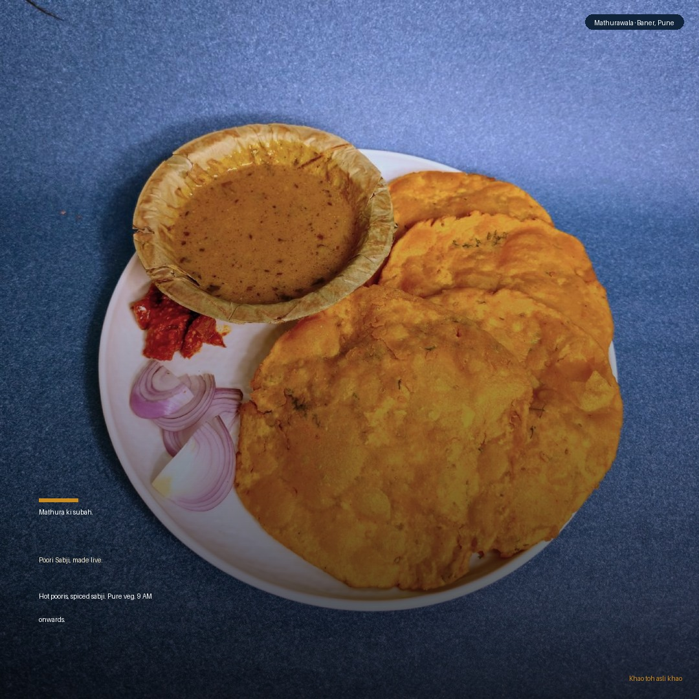

Subah. Swaad. Story. Sev. Four posts that go deeper.
Drop 05 goes beyond the hero dishes and into the brand's soul: morning nashta with Poori Sabji, the all-day Dahi Bhalla (no more evening-only myth), the 3,000-year heritage story behind the kachori, and a spotlight on Ratlami Sev — the namkeen that people drive to Baner for. All captions are copy-paste ready.
How to use: captions are copy-paste ready. Right-click the poster images to save to phone. Post from @mathurawalaofficial at peak times below. Verify each item is live on PetPooja/Zomato before posting.
Menu note: Indori Poha is NOT on the menu — do not post it. Lassi and Dahi Bhalla are ALL-DAY items, never frame as evening-only.
The four posts
Poori. Dahi Bhalla. Heritage. Sev.

Week 9 · Mon · 9 AMFeed · 1080x1080
Poori Sabji — Mathura ki subah in Baner
Why now: The morning nashta slot is our biggest untapped walk-in window. Most people in Baner default to a cafe or skip breakfast. Poori Sabji is a Braj classic with strong cultural pull — few places in Pune do it the asli way. Monday 9 AM catches the "where to eat this morning" scroll.
Mathura ki subah, Baner mein.
Garm garm poori. Sookhi aloo sabji.
Hing ka tadka. Kali mirch ka asar.
Braj nashte ka roz ka swaad.
Pure veg. Fresh har subah. 9 baje se.
Mathurawala, Baner, Pune.
Khao toh asli khao. Radhe Radhe 🦚
Why now: A lot of people think dahi bhalla is an evening dish and skip us at midday. This post directly corrects that and pulls in the lunchtime crowd. Wednesday 1 PM is peak "what's for lunch" search time in the Baner/Balewadi IT corridor. The all-day availability is a unique advantage vs most chaat places.
Dahi bhalla. Subah se raat tak.
Koi waiting nahi. Koi timing restriction nahi.
Soft bhalla, thanda dahi, saunth aur sev.
Jo mann kare, tab aao.
Lunch bhi. Evening bhi. Whenever.
Mathura ka asli dahi bhalla, Baner mein.
Khao toh asli khao. Radhe Radhe 🦚
Why now: This is the brand's most saved post format — education + cultural pride + a concrete hook. It does three things: drives first-timers curious about the Mathura connection, makes existing customers feel they belong to something bigger, and builds the brand identity that separates Mathurawala from every other chaat shop. Friday evening is high-engagement time.
3,000 saal se Mathura mein yahi banta hai.
Hing ki kachori.
Dhuli urad dal ki stuffing.
Dhime pakaye aloo-tamatar ki sabji.
Koi recipe book nahi. Koi shortcut nahi.
Haath se haath mein aaya.
Generation se generation mein.
Ab Baner mein.
Mathurawala.
Khao toh asli khao. Radhe Radhe 🦚
Ratlami Sev — the namkeen people drive to Baner for
Why now: Ratlami Sev is highly distinctive — it's not a standard Pune chaat-shop item. It anchors our Mathura/Madhya Pradesh belt identity and opens the gifting angle (people buy namkeen to take home). Saturday 4 PM catches the weekend "snacks run + what's new" decision. Also great as a gifting hook before festivals.
Ratlami Sev. Asli wala.
Crisp. Spiced. Hing ka punch.
Woh teekha aftertaste jo baar baar yaad aata hai.
Eat it. Gift it. Take a box home.
Pure veg. Made in our own kitchen.
Mathurawala, Baner, Pune.
Khao toh asli khao. Radhe Radhe 🦚
Film the morning. 25 seconds. It will not stop playing.
The most shareable Reel we can make right now is the kitchen morning prep. No voiceover needed — just the sounds and the motion. It proves our "made live" promise better than any caption ever can.
Reel: "Mathura ki Subah" (25 sec)
Hook (0-3s): Black screen. Sound of dough being punched. Text fades in: "4 AM. Baner." Cut to hands kneading. No music yet.
Beat 1 (3-9s): Rolling pin on dough. Round poori or kachori shape cut out. Stacked on a tray. Quick cuts — 5-6 of them. Rhythm builds.
Beat 2 (9-17s): Poori/kachori drops into hot oil. PUFF. Golden. Steam. The sound is everything. Slight overhead, warm oil light. Pull out two pieces. One text: "Made live. Roz."
Beat 3 (17-22s): Plate being assembled — poori/kachori + sabji + chutney. Hands work fast. Natural kitchen energy.
End card (22-25s): First customer of the morning at the counter, smiling. Text: "Aao. Baner. Subah 9 baje se." Fade to logo.
Caption for Reel:
Jab Baner so raha hota hai, hum poori bel rahe hote hain.
Made live. Roz. Har subah 9 baje se.
Pure veg. Mathura ka asli nashta.
Mathurawala, Baner, Pune.
Khao toh asli khao. Radhe Radhe 🦚
#morningreel #poorisabji #mathurawala #baner #punefood #madeLive #brajfood
Shoot note: Shoot 4 min total (dough to first customer). Edit in CapCut. Use natural kitchen sounds for first 10s, light Bollywood dhol/dhun for the second half. No voiceover needed.
Weeks 9-10 calendar
Two weeks. Fourteen posts. Zero repeats.
This is the full schedule for Weeks 9 and 10. Stories every day, feed posts at the time above, GBP 2x/week. Cross-post Reels to Facebook and YouTube Shorts.